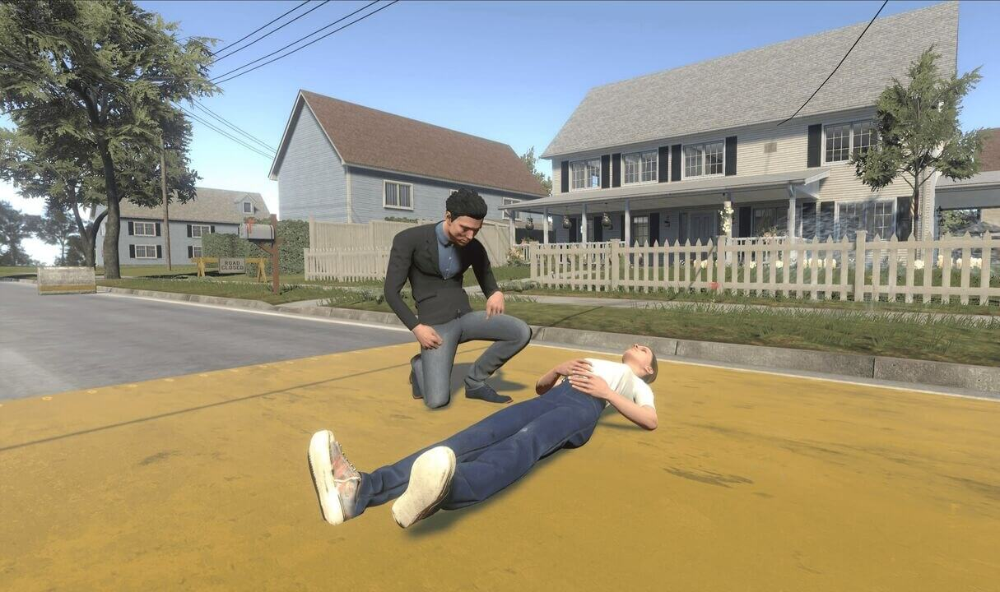

Jonathan Batchelder
About Me
I am a software engineer currently at Microsoft with 3+ years of frontend and backend experience. My personal published app, Triage Simulator, has gotten 150+ acquisitions from 25+ countries on the Windows App Store. I graduated with a Master's and Bachelor's in Computer Science at Southern Adventist University in May of 2021.
Scroll down to see some of my latest projects!


Real-Time LED Image Displayer

YeetPost Mobile
Muscle Sensor LED Display
Contact Me
Email: jonbat@live.com